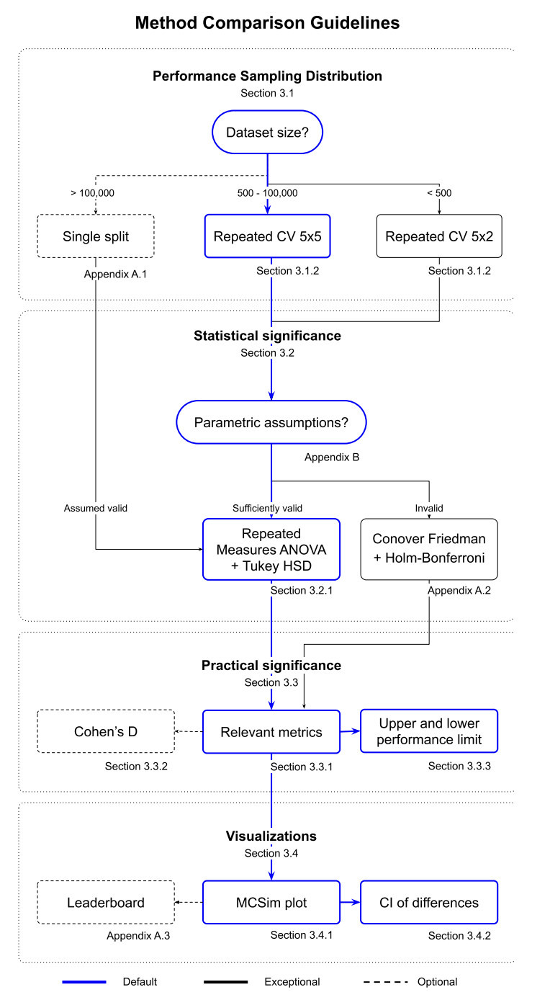
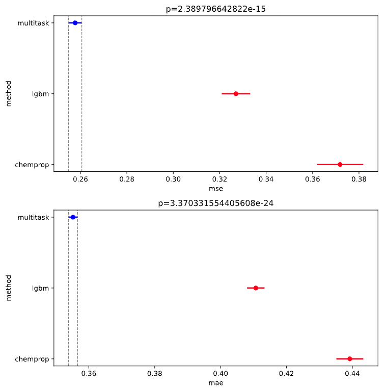
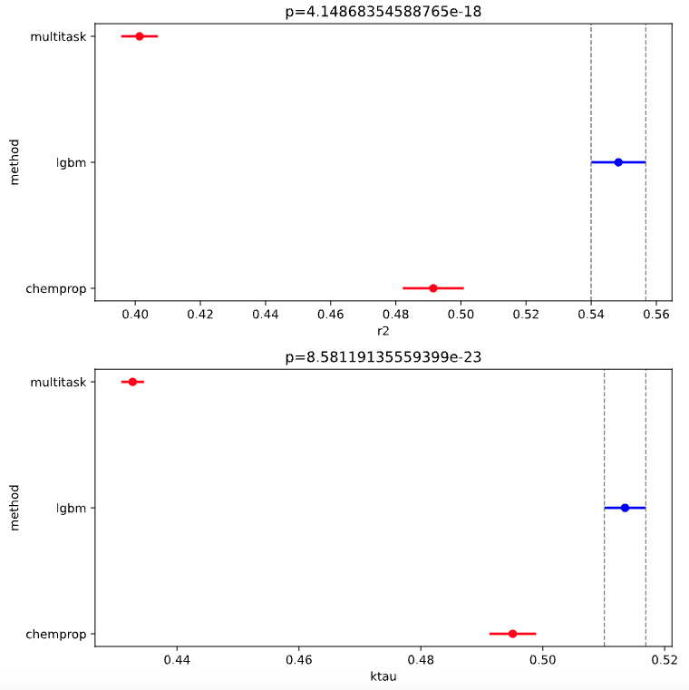
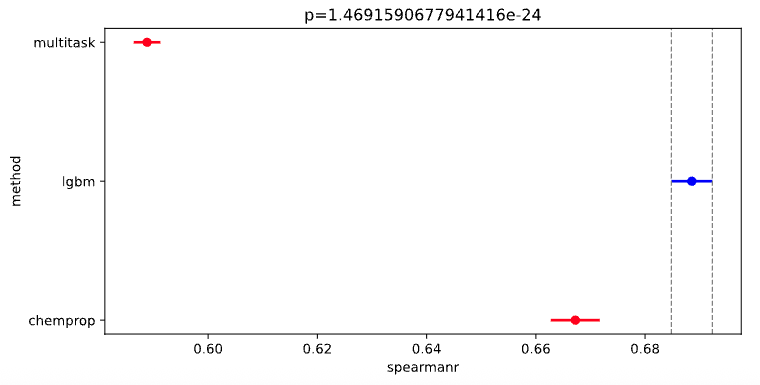
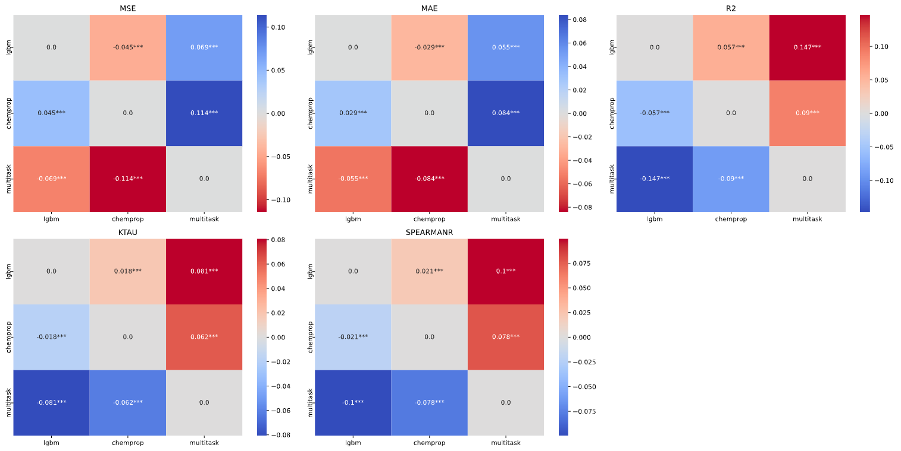
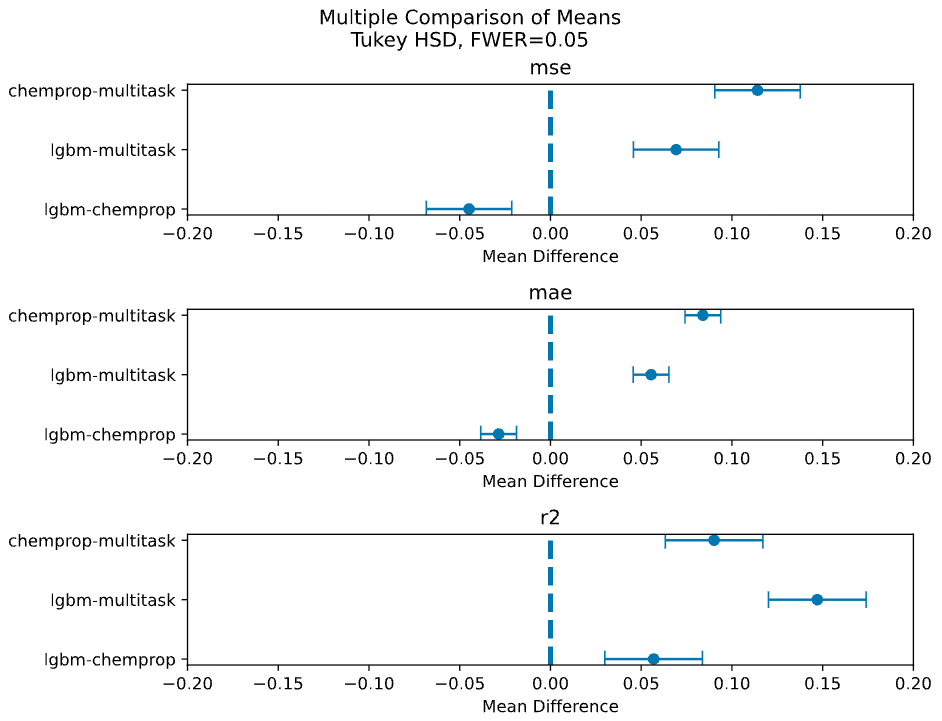
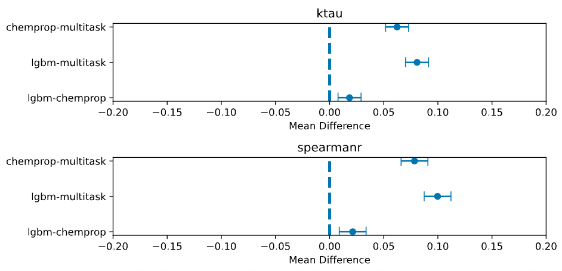
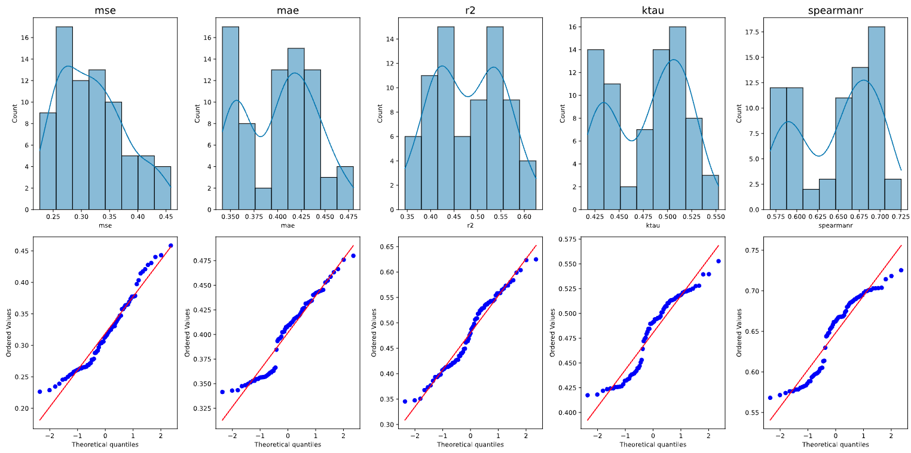

3.0 Comparing Models
After Training your Models, What’s Next?
After training multiple models with Anvil, you will want to compare the performance across models in a robust way. Comparing models properly and with appropriate statistical rigour is very important for establishing which models you should be deploying in production for your endpoints.
Just comparing a single number (say a metric like MAE) from a single training run is not a robust way to compare models due to the possiblity of over-optimising to a single split.
To properly compare models, you should sample from the performance distribution of your model using a technique like cross validation. We closely follow the guidlines laid out in this paper. Consider the below decision chart for helping figure out how to compare your models:

Requirements
For this demo, you will need:
At least 2 models trained with the Anvil workflow.
All models trained with same cross validation splits, e.g. 5 splits x 5 repeats ## Overview This notebook will walk you through how to use the OpenADMET CLI to evaluate models that have been trained with the Anvil workflow. In this particular demo, we will compare the models we trained in
02_Training_Models.ipynb.
Use Anvil to Compare Models
As with training models with Anvil, comparing models is also a simple command with the following arguments:
openadmet compare \
--model-stats <path-1/cross_validation_metrics.json> \ # this is the path to the cross_validation_metrics.json file output by anvil of your first model
--model-tag <a-tag-to-label-your-trained-model-1> \ # this can be any moniker that is distinguishable for you
--task-name <name-of-task-1> \ # this is the name of your target_cols from the anvil recipe.yaml
\
--model-stats <path-2/cross_validation_metrics.json> \ # corresponding info for your second model
--model-tag <a-tag-to-label-your-trained-model-2> \
--task-name <name-of-task-2> \
... repeat this set of arguments for as many models as you want to compare
--output-dir <path-to-output-plots> \ # this is an existing directory for your plot to export to
--report <whether-or-not-to-write-pdf-report>
IMPORTANT NOTE You can only compare models that have the same number of cross validation folds, e.g. a model with 5 splits x 2 repeats can only be compared to another model that is also cross validated with 5 splits x 2 repeats.
For this demo, this command is:
[1]:
%%bash
export OADMET_NO_RICH_LOGGING=1
openadmet compare \
--model-stats ../02_Model_Training/lgbm/cross_validation_metrics.json \
--model-tag lgbm \
--task-name OPENADMET_LOGAC50 \
--model-stats ../02_Model_Training/chemprop/cross_validation_metrics.json \
--model-tag chemprop \
--task-name OPENADMET_LOGAC50 \
--model-stats ../02_Model_Training/multitask/cross_validation_metrics.json \
--model-tag multitask \
--task-name OPENADMET_LOGAC50_cyp3a4 \
--output-dir model_comparisons/ \
--report True
/Users/cynthiaxu/miniforge3/envs/demos/lib/python3.12/site-packages/hyperopt/atpe.py:19: UserWarning: pkg_resources is deprecated as an API. See https://setuptools.pypa.io/en/latest/pkg_resources.html. The pkg_resources package is slated for removal as early as 2025-11-30. Refrain from using this package or pin to Setuptools<81.
import pkg_resources
/Users/cynthiaxu/miniforge3/envs/demos/lib/python3.12/site-packages/openadmet/models/comparison/posthoc.py:476: FutureWarning: Setting an item of incompatible dtype is deprecated and will raise an error in a future version of pandas. Value '***' has dtype incompatible with float64, please explicitly cast to a compatible dtype first.
significance[(hsd.pvalue < self.sig_levels[2]) & (hsd.pvalue >= 0)] = "***"
/Users/cynthiaxu/miniforge3/envs/demos/lib/python3.12/site-packages/openadmet/models/comparison/posthoc.py:476: FutureWarning: Setting an item of incompatible dtype is deprecated and will raise an error in a future version of pandas. Value '***' has dtype incompatible with float64, please explicitly cast to a compatible dtype first.
significance[(hsd.pvalue < self.sig_levels[2]) & (hsd.pvalue >= 0)] = "***"
/Users/cynthiaxu/miniforge3/envs/demos/lib/python3.12/site-packages/openadmet/models/comparison/posthoc.py:476: FutureWarning: Setting an item of incompatible dtype is deprecated and will raise an error in a future version of pandas. Value '***' has dtype incompatible with float64, please explicitly cast to a compatible dtype first.
significance[(hsd.pvalue < self.sig_levels[2]) & (hsd.pvalue >= 0)] = "***"
/Users/cynthiaxu/miniforge3/envs/demos/lib/python3.12/site-packages/openadmet/models/comparison/posthoc.py:476: FutureWarning: Setting an item of incompatible dtype is deprecated and will raise an error in a future version of pandas. Value '***' has dtype incompatible with float64, please explicitly cast to a compatible dtype first.
significance[(hsd.pvalue < self.sig_levels[2]) & (hsd.pvalue >= 0)] = "***"
/Users/cynthiaxu/miniforge3/envs/demos/lib/python3.12/site-packages/openadmet/models/comparison/posthoc.py:476: FutureWarning: Setting an item of incompatible dtype is deprecated and will raise an error in a future version of pandas. Value '***' has dtype incompatible with float64, please explicitly cast to a compatible dtype first.
significance[(hsd.pvalue < self.sig_levels[2]) & (hsd.pvalue >= 0)] = "***"
Levene's test results
-------------------------
+--------------+-------------+-----------+-----------+-------------+
| mse | mae | r2 | ktau | spearmanr |
|--------------+-------------+-----------+-----------+-------------|
| 15.3368 | 9.0868 | 2.52168 | 2.8462 | 1.8035 |
| 2.82785e-06 | 0.000302768 | 0.0873985 | 0.0646163 | 0.172083 |
+--------------+-------------+-----------+-----------+-------------+
Tukey's HSD results
-------------------------
+--------------------+-----------+------------+-------------+-------------+
| method | metric | value | errorbars | p-value |
|--------------------+-----------+------------+-------------+-------------|
| lgbm-chemprop | mse | -0.0448613 | 0.0235377 | 6.0121e-05 |
| lgbm-multitask | mse | 0.0692462 | 0.0235377 | 2.78765e-09 |
| chemprop-multitask | mse | 0.114107 | 0.0235377 | 0 |
| lgbm-chemprop | mae | -0.0285522 | 0.0098576 | 4.42271e-09 |
| lgbm-multitask | mae | 0.0554412 | 0.0098576 | 0 |
| chemprop-multitask | mae | 0.0839934 | 0.0098576 | 0 |
| lgbm-chemprop | r2 | 0.0568517 | 0.0268932 | 9.21074e-06 |
| lgbm-multitask | r2 | 0.147037 | 0.0268932 | 0 |
| chemprop-multitask | r2 | 0.0901851 | 0.0268932 | 4.12251e-11 |
| lgbm-chemprop | ktau | 0.0184267 | 0.0106302 | 0.000264308 |
| lgbm-multitask | ktau | 0.0807836 | 0.0106302 | 0 |
| chemprop-multitask | ktau | 0.0623569 | 0.0106302 | 0 |
| lgbm-chemprop | spearmanr | 0.0213372 | 0.012386 | 0.000289132 |
| lgbm-multitask | spearmanr | 0.0997481 | 0.012386 | 0 |
| chemprop-multitask | spearmanr | 0.0784109 | 0.012386 | 0 |
+--------------------+-----------+------------+-------------+-------------+
Now, in model comparisons, you should find these outputs:
Levene.json- file containing results of Levene test which assesses homogeneity of variances among groupsTukey_HSD.json- file containing confidence intervals for Tukey HSD (honestly significant difference) test for pairwise comparisons between modelsanova.pdf- ANOVA (analsyis of variance) plot showing whether each metric across all the compared models are statistically signficantly different; p-value ≤ 0.05mcs_plots.pdf- multiple comparisons similarity plot where the color denotes effect size and asterisk annotations denote statistical significancemean_diffs.pdf- plot of confidence intervals of the difference in mean performance between models; intervals that do not cross the zero line imply statistical significancenormality_plots.pdf- plots to show how normal the distribution of metrics are to check assumptions of parametric tests, e.g. ANOVA, etc.paired_plots.pdf- plots to check pairwise relationships between metrics across the comparing modelsposthoc.pdf- a file containing the tabulated Levene and Tukey HSD results
Interpreting the comparison plots
Let’s walkthrough how you might interpret some of these generated plots.
ANOVA
First, consider the anova.pdf. The analysis of variance (ANOVA) shows whether each performance metric is statistically different from the others, i.e. p-value ≤ 0.05.
NOTE: The models plotted in blue are the best for each metric.
. .
.
From these plots, we see that the multitask ChemProp model has the best mean squared error (MSE) and mean absolute error (MAE), meaning that the multitask model out performs the LGBM and single task ChemProp model in predicting values that are close to the target values in the test set (on average)
However, the LGBM model has the highest:
\(R^2\), which gives an idea of how well the variance in the actual values is explained by the model, aka goodness-of-fit.
Kendall’s \(\tau\), which measures how similar the rank order of predictions is to the rank order of true values.
Spearman’s \(\rho\), which also measures ranking, but more specifically, whether larger true values tend to correspend to larger predictions, even if not linearly.
Thus depending on your use-case, you may prefer a model with higher numerical accuracy (the multitask ChemProp model) for more accurate activity predictions OR you may prefer a model that is better at predicting ranking of activities (the LGBM model).
Multiple Comparison Similarity
These heatmaps visualize how similar or different the performance metrics (MSE, MAE, \(R^2\), Kendall’s \(\tau\), Spearman’s \(\rho\)) are from each other pairwise across different models.
Larger values are more similar and smaller/negative values mean are more different.
From these heatmaps, we can see that despite the LGBM model appearing to have better \(R^2\), Kendall’s \(\tau\), and Spearman’s \(\rho\) from the ANOVA plots, the multitask model actually performs very similarly to the LGBM model.
.
Mean Differences
These plots are another visualization of pairwise differences between model means that show the magnitude and direction in difference with 95% confidence intervals.
Each point is the difference in means between the two compared models, e.g. chemprop-multitask.
. .
Normality Plots
These plots check the normality of the distribution of your metrics as sampled from cross validation. Most ANOVA and t-tests assume residuals are normally distributed.
With these plots, we are able to gauge the reliability of our parametric tests by checking the normality. Points that lie close the line are normally distributed, but in this case, we see some curving of the points from the line, implying that the residuals are skewed.
.
Paired plots
Paired plots also visualize pairwise comparisons of our metrics between models on each cross validation fold. This can be a useful view for seeing how each fold performed between models.
Moving forward, we will use our LGBM model due to its superior ranking abilities and for ease of inference on a CPU.
- Now let’s take it up a notch by training a model ensemble!
End of
03_Comparing_Models~